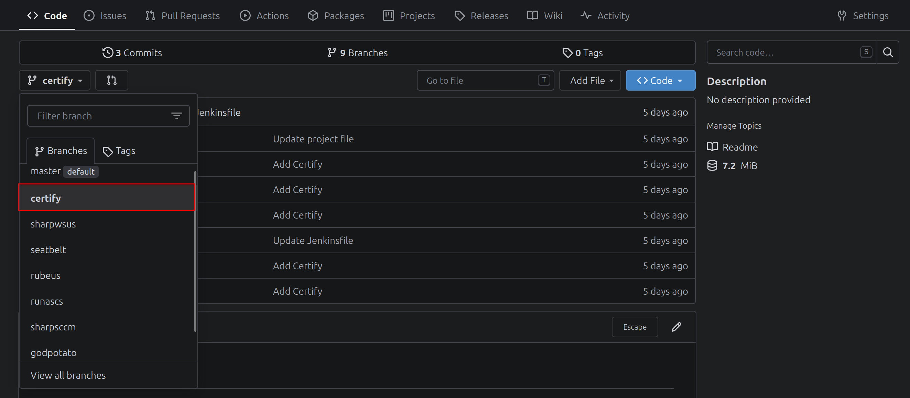
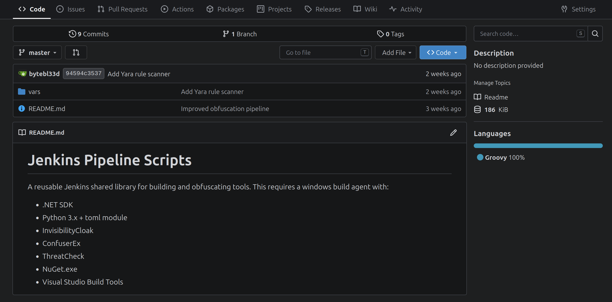
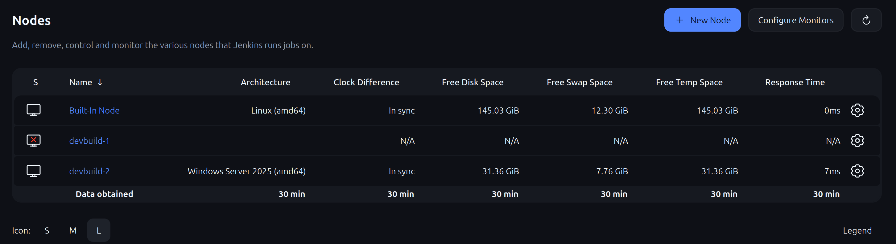
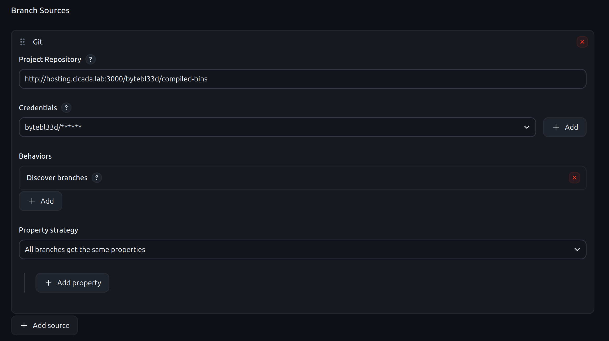
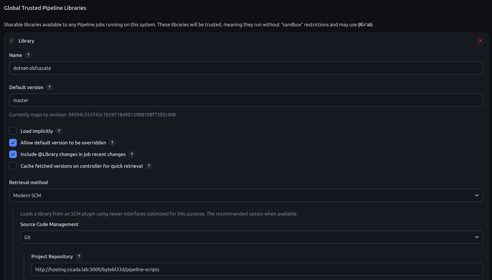
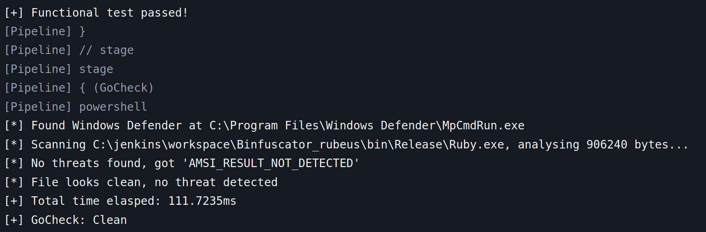
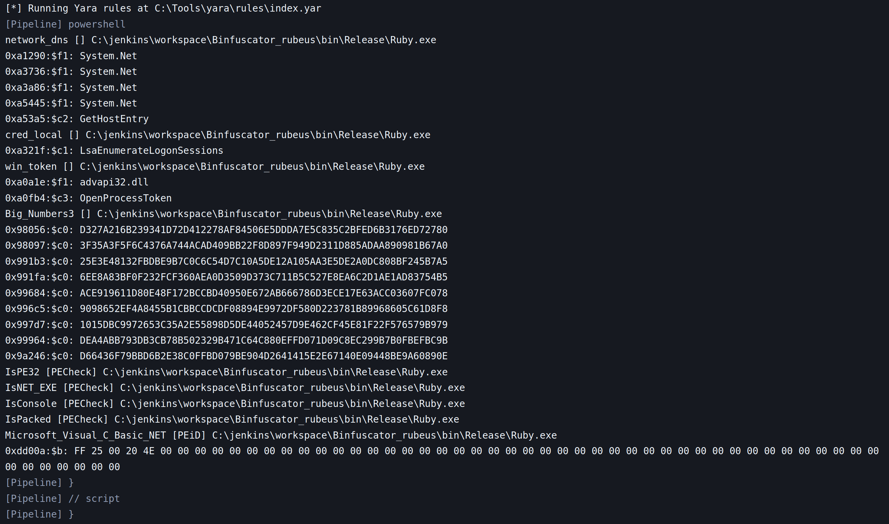
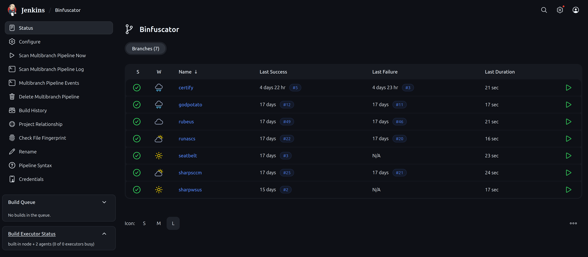
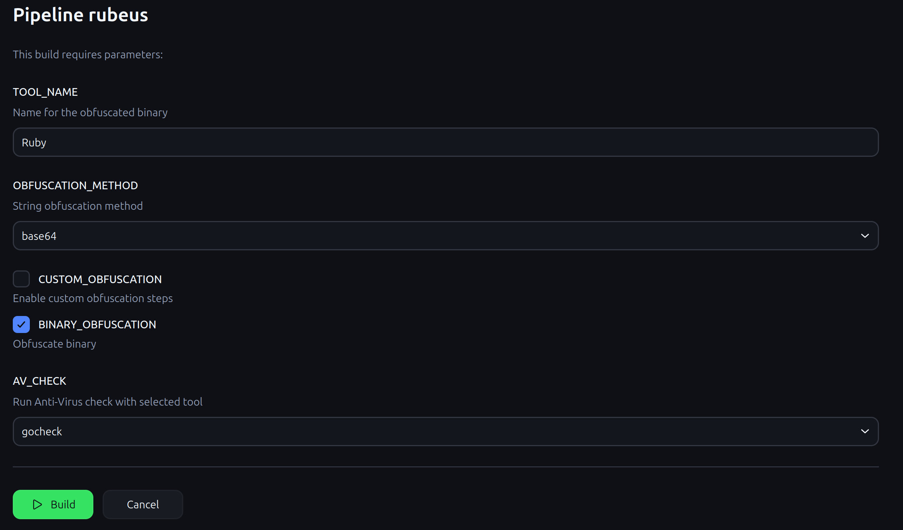

Building a CI/CD Pipeline for Malware Obfuscation
It has been some time since my last post. Professional commitments, personal life, and preparation for the HackTheBox CAPE exam (more on that later) have kept me busy. During my preparation, one of the topics covered in the CAPE syllabus is defense evasion, and while the underlying concepts are not particularly complex, the practical execution often boils down to obfuscating open-source tooling to bypass AV signatures.
Until recently, I relied on a dedicated "malware development" VM (as recommended by HTB). However, this workflow is inherently repetitive: clone the repository, perform manual string obfuscation, rename variables and project metadata, and finally, pass the binary through whatever post-build obfuscation tool. For a single project, this process can easily consume an hour or more to achieve a somewhat decent evasion rate.
Furthermore, this manual approach introduces a significant risk of breaking functionality. I learned this the hard way where certain functions (looking at you, Rubeus) simply stopped working because I adapted too much code. Without rigorous, automated testing, you only discover these things when executing the tool in a live environment.
In my current job, my role has shifted a bit toward DevSecOps, which has given me some exposure to Jenkins pipelines. The value proposition of Jenkins is clear: it allows you to codify the entire build and obfuscation process. Once you define the standard transformations required for a project, you can automate the entire pipeline, ensuring consistency and speed.
To operationalize this, you still require a dedicated build VM with all necessary toolchains installed. The build process may vary per project, but for my use case, I focused initially on .NET projects, specifically the Ghostpack binaries leveraged in the CAPE course. In this post, I will walk through how I set up this malware development pipeline and how you can replicate it for your own workflows.
Project Repository Setup
To begin, I established a central repository for all my .NET projects. I used a local Gitea instance hosted on a spare machine within my home lab to manage the source control. For each .NET tool, I created a dedicated branch and cloned the respective source code.

With the project repositories in place, I created a separate repository to house my Jenkins pipeline scripts.

This secondary repository will serve as the source for the multibranch pipeline configuration later in the setup.
Jenkins Environment Setup
Next, I configured my Jenkins instance. I already maintain a Portainer deployment for managing my Docker containers, so I opted to deploy Jenkins as an additional container on my development server.
Jenkins operates on a node-based architecture, where nodes are designated machines responsible for executing build tasks. My build infrastructure consists of two Proxmox virtual machines:
devbuild-1: An Ubuntu Linux VM designated for Linux-based build jobs.devbuild-2: A Windows Server 2025 Core VM designated for Windows-based build jobs.
While I currently have no immediate need for the Linux node, I have provisioned it and added it to Jenkins for future use. At present, the Windows node is the active build executor.

Connecting to the Repositories
Recall that I created two distinct repositories. The objective is to establish an automated build process that pulls the source code from the correct branch and executes the tasks defined in the pipeline script. To achieve this, I created a new Multibranch Pipeline project in Jenkins and configured it with the Gitea credentials required to access the repository.

Most settings remain at their default values. The critical requirement is that each branch must contain a Jenkinsfile, this is the declarative or scripted pipeline definition that instructs Jenkins on how to process the code.
To centralize my pipeline logic, I configured a Global Trusted Pipeline Library under Manage Jenkins > System. I named this library dotnet-obfuscate and pointed it to my pipeline-scripts repository.

Jenkins Obfuscation Library
For .NET projects, I built a reusable pipeline library that encapsulates the entire obfuscation workflow. This library, which I named dotnet-obfuscate, is referenced in each project's Jenkinsfile at the root of the repository. The shared library approach means I can maintain the obfuscation logic in a single location while applying it consistently across multiple tools. Below is an example Jenkinsfile that invokes the library with the default configuration:
@Library('dotnet-obfuscate') _
dotnetObfuscate{
binaryName = 'MyTool'
outputDir = 'bin\\Release'
obfuscationMethods = ['none', 'rename', 'base64', 'rot13', 'reverse']
avCheck = ['gocheck', 'threatcheck', 'all', 'none']
customBuildCmd = 'C:\\Tools\\nuget.exe restore && dotnet build --configuration Release --artifacts-path ./artifacts /p:AssemblyName="MyTool"'
customObfuscation = false
customObfuscateScript = 'obfuscate.ps1'
binaryObfuscation = true
}Every build pipeline includes two critical validation stages: a functional test to verify the binary executes without runtime errors, and a detection test using ThreatCheck or Gocheck to determine if the binary is flagged by Microsoft Defender.
The pipeline implements several key features to streamline the obfuscation process.
InvisibilityCloak: Source Code Obfuscation
This stage performs source-level transformations before compilation. It alters project metadata such as GUIDs and assembly attributes, and applies string obfuscation techniques to make static analysis more difficult. The goal is to break signature-based detection at the source level before the binary is even compiled.
Custom Obfuscation
For projects requiring specialized handling, the pipeline supports invoking a custom PowerShell script. This provides flexibility to apply project-specific modifications such as function renaming, comment stripping, or additional string encryption that may not be covered by generic obfuscation methods.
ConfuserEx: Binary-Level Obfuscation
At the binary stage, the pipeline integrates ConfuserEx, an open-source protector for .NET applications. ConfuserEx offers a comprehensive suite of protections:
- Symbol renaming: obfuscates class, method, and field names
- Control flow obfuscation: scrambles code logic to impede decompilation
- Anti-debug/anti-tamper: prevents debugging and memory dumping
- Constant and resource encryption: protects sensitive strings and embedded resources
ConfuserEx is invoked via its command-line interface (Confuser.CLI.exe) using a project configuration file (.crproj) that defines the protection rules. The pipeline generates this file dynamically based on the parameters passed to the library. Note that ConfuserEx supports .NET Framework versions 2.0 through 4.8, making it compatible with most legacy red-team tooling.
Functional Testing
A critical step that validates the obfuscated binary still performs its intended functions. This guards against the "breakage" issue I encountered previously. The test runs the binary with common arguments and verifies expected output and exit codes.
ThreatCheck/Gocheck: Automated Detection Testing
ThreatCheck, originally derived from DefenderCheck and further modified by Rasta Mouse, performs byte-level analysis against Microsoft Defender and AMSI. It takes a binary as input, recursively splits it into smaller chunks, and scans each segment to pinpoint the exact byte ranges that trigger detection. This outputs a hex dump of the offending bytes, allowing me to identify which code sections are causing signatures without waiting for a full Defender scan. The pipeline archives these results alongside the obfuscated binary for later analysis.

There is also a Yara rules check on the binary, but this is merely informational. At this point I just wanted to see what kind of detections the default Yara rules generate.

Artifact Archiving
All obfuscated binaries, along with their accompanying .crproj configuration files, detection test logs, and functional test outputs, are automatically archived by Jenkins. This ensures a complete audit trail and enables easy comparison across different obfuscation attempts.
The final look
After extensive testing, and more than a few failures along the way, I finally arrived at a stable, working pipeline. The build process is now fully automated and yields consistent results across different projects. Below is a screenshot of all my current projects:

The pipeline runs through each stage sequentially: source checkout, source-level obfuscation (InvisibilityCloak), compilation, binary-level obfuscation (ConfuserEx), functional validation, and finally, detection testing with ThreatCheck/Gocheck.
Customizable Build Parameters
One of the key design decisions was making the pipeline parameterized, allowing me to tailor each build without modifying the underlying pipeline code. When triggering a new build, I can specify the following parameters:

- Tool Name: The name of the target binary. This determines the output filename and is used in the functional testing stage.
- String Obfuscation Method: Select from methods like base64, rot13, reverse, or none. This controls how strings are encoded in the source before compilation.
- Custom Obfuscation: A toggle that, when enabled, triggers the pipeline to look for and execute a project-specific PowerShell script. This allows me to apply unique transformations that aren't covered by the generic obfuscation methods such as renaming specific classes.
- Binary Obfuscation: Enables or disables the ConfuserEx stage. While I typically leave this on, having the option to disable it is useful for debugging or when I need a clean binary for comparison.
- AV Check: Toggles the ThreatCheck detection stage. I can disable this during rapid iteration to save time, and re-enable it for final validation before deployment.
Time Savings and Workflow Efficiency
The pipeline has dramatically reduced the time required to produce evasive binaries. What previously took an hour of manual, error-prone work is now reduced to a 5-10 minute automated process. The consistency is equally valuable, I no longer worry about accidentally breaking functions or forgetting a critical obfuscation step.
Most .NET tools from the Ghostpack suite share a similar project structure, which means the pipeline works out-of-the-box for the majority of projects. However, there are occasional edge cases where I need to adjust the source code itself, for example, when a tool has hardcoded paths or relies on reflection that breaks under obfuscation. Fortunately, these adjustments are typically minor and only require changes to the project repository; the pipeline itself remains untouched.
This separation of concerns is what makes the approach scalable. With the pipeline infrastructure in place, onboarding a new tool is as simple as:
- Creating a new branch in the Gitea repository
- Adding a minimal Jenkinsfile that calls the shared library
- Triggering the build with the appropriate parameters
The pipeline handles everything else: downloading dependencies, applying obfuscation, running tests, and archiving the final binary. This allows me to focus on the actual research and tool development rather than the repetitive mechanics of building evasive binaries.